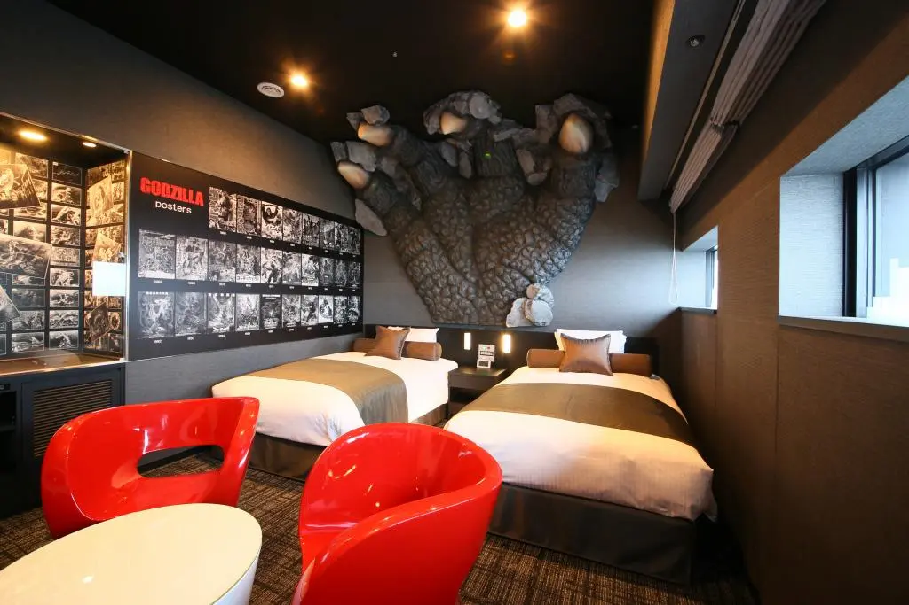
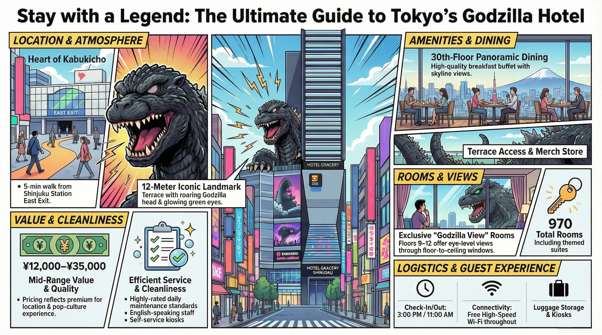
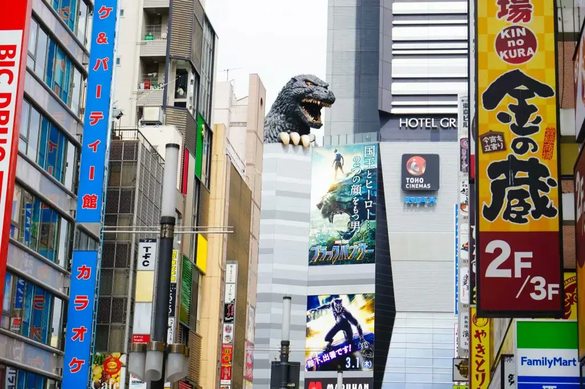
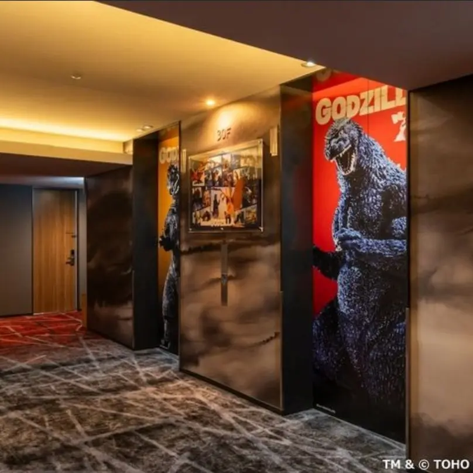
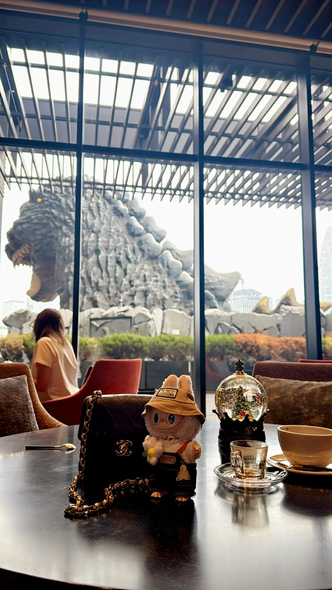
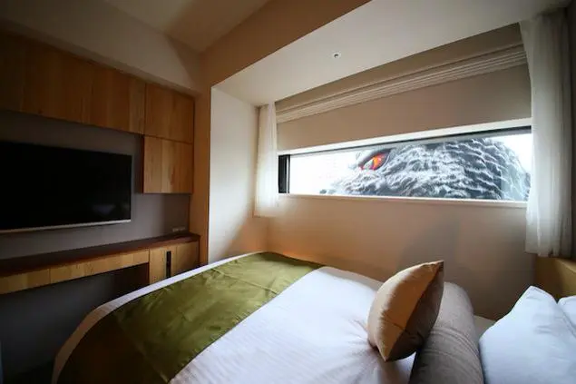
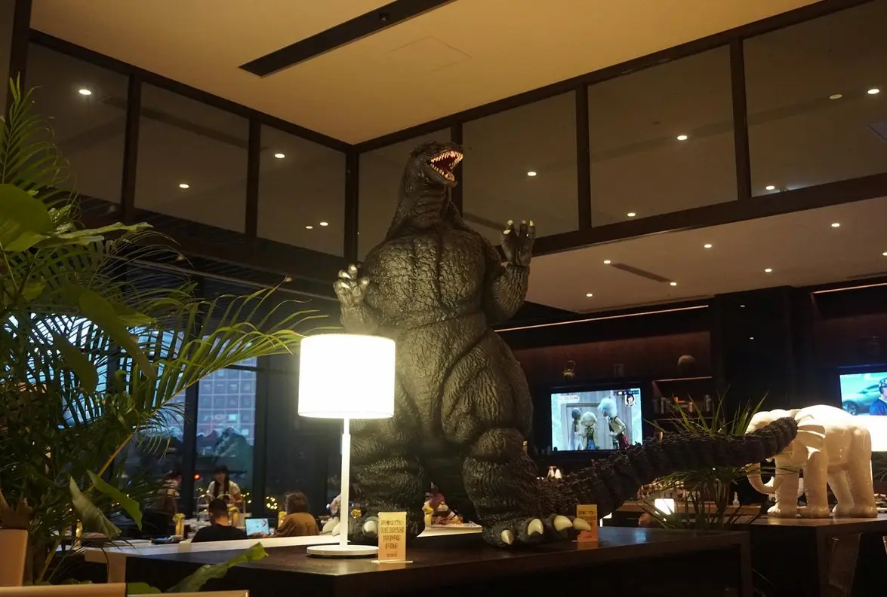
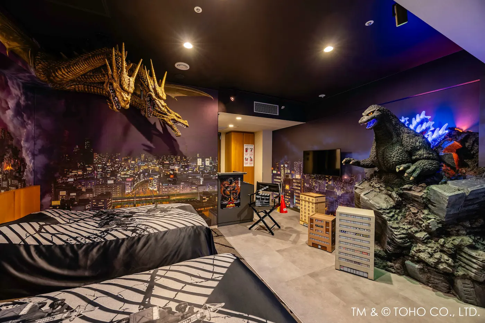

Hotel Gracery Shinjuku — known as Tokyo's Godzilla Hotel — is the only place in the world where you can sleep directly under the shadow of a life-size Godzilla head. Located in Kabukicho, Shinjuku, this is not a hotel that merely decorates itself with pop culture references. The Godzilla head erupting from the eighth floor is 12 meters tall, roars on a schedule, and glows green against the Tokyo skyline at night. This complete guide covers the Godzilla rooms, the roar schedule, how to get there, and everything in between.
You are walking through Kabukicho — Tokyo's neon-drenched entertainment district — when you look up and lock eyes with a creature that has been destroying this city since 1954. The head is enormous. The scales are textured. The eyes are lit from within. And it is growing out of the eighth floor of your hotel.
The Story Behind Tokyo's Godzilla Hotel
Hotel Gracery Shinjuku opened in 2015 as part of the Shinjuku Toho Building development — a complex built on the site of the old Shinjuku Toho Cinema, which for decades screened the original Godzilla films. The connection is intentional and deeply felt. Toho, the studio that created Godzilla in 1954, commissioned a full-scale recreation of the monster's head for the hotel's eighth-floor terrace, where it has presided over Kabukicho ever since.
The head measures approximately 12 meters tall — the size of a three-story building on its own. At scheduled times throughout the day, it emits a roar that echoes across Kabukicho and draws crowds of tourists with cameras raised. At night, the eyes glow an eerie green against the Tokyo skyline, visible from streets across the district. It is, by any measure, one of the great spectacles of modern Tokyo.
For fans of Godzilla — one of Japan's most enduring pop culture icons and a franchise that spans seven decades, 38 films, and a recent Hollywood revival — staying here is not just a hotel choice. It is a pilgrimage.
Godzilla Rooms at Hotel Gracery Shinjuku
The hotel's 970 standard rooms are comfortable, well-designed business hotel rooms — exactly what you would expect from a Gracery property. But the Godzilla View rooms on floors 9 through 12 are something else entirely. These rooms face directly onto the terrace where the monster's head is mounted, placing guests at eye level with Godzilla through their floor-to-ceiling windows.

Waking up in a Godzilla View room is an experience that resists easy description. The head is close enough to feel its presence — not threatening, exactly, but enormous and immediate in a way that recalibrates your sense of scale. At 3 AM, with Kabukicho still pulsing with light below and the monster's eyes glowing green outside your window, you understand why people return to this hotel again and again.
The rooms themselves are immaculately maintained. Beds are firm and high-quality, blackout curtains handle Tokyo's relentless light pollution (except, of course, the Godzilla light), and the bathrooms are efficiently designed in the Japanese manner. Godzilla-themed toiletries and a small selection of monster merchandise complete the experience. It is theatrical and sincere at the same time — which is precisely the right combination.
For the most immersive experience, request a Godzilla View room on an upper floor of the east-facing wing. These rooms book out weeks in advance during peak seasons, so reserve as early as possible. The dedicated Godzilla Room — a single suite on the lower floors with its own Godzilla statue and claw-through-the-wall installation — is the most dramatic single option and commands a significant premium.
The Godzilla Roar Schedule: What to Know
The Godzilla head on the eighth-floor terrace of Hotel Gracery Shinjuku roars on a schedule — typically multiple times daily, with events announced at the front desk upon check-in. The roar schedule changes seasonally and occasionally adjusts for maintenance, so it is always worth confirming current times when you arrive. Events draw sizable crowds even in rain, both from the terrace and from the street below on Kabukicho's main approach.
Hotel guests have a meaningful advantage: you can position yourself at your room window for the roaring events rather than competing for terrace space with day visitors. From a Godzilla View room on floors 9 through 12, the roar arrives with a physical resonance through the building structure that street-level observers never experience. This is the version worth timing your arrival for. If you are booking a Godzilla View room specifically for this experience, ask the front desk for the day's roar schedule immediately upon check-in and plan your first evening accordingly.
The 8th Floor Godzilla Terrace
The Godzilla Terrace on the 8th floor is open to the public — not just hotel guests — and it is consistently one of the most visited spots in Shinjuku. The viewing platform wraps around the base of the head and offers a panoramic view of Kabukicho and the wider Shinjuku skyline that is genuinely spectacular, particularly at dusk when the neon below begins to compete with the fading sky above.
The Gracery Lounge adjacent to the terrace serves coffee and light meals with floor-to-ceiling windows facing the Godzilla head directly. It functions as the hotel's most distinctive public space and is worth visiting regardless of whether you are staying. On the terrace itself, a Godzilla merchandise kiosk stocks official Toho goods — figures, keychains, and apparel — that are difficult to source elsewhere in Shinjuku.
Location: The Center of Otaku Tokyo
Shinjuku is the busiest railway station in the world, handling over 3.5 million passengers daily. Hotel Gracery sits in Kabukicho, the entertainment district just north of the station — a five-minute walk from the east exit through one of Tokyo's most kinetically alive streetscapes. Golden Gai, the labyrinthine network of tiny bars beloved by locals and adventurous tourists, is three minutes away. The concentrated anime and manga stores of Shinjuku's eastern blocks are immediately walkable.
For otaku travelers, the location is particularly strategic. Animate Shinjuku, one of the largest anime merchandise stores in Tokyo, is a short walk. The Ghibli Museum at Mitaka is 25 minutes by Chuo Line. Akihabara, the undisputed capital of anime culture, is 15 minutes by Sobu Line. Shibuya — where Jujutsu Kaisen's most famous battles were fought — is 8 minutes by Yamanote Line. Hotel Gracery puts all of it within easy reach.
Cleanliness: What Guests Actually Report
Cleanliness is one of the most consistently positive dimensions of Hotel Gracery Shinjuku across review platforms. Towels are changed daily, bathrooms are maintained to a standard that multiple guests specifically single out for praise across Booking.com and Hotels.com reviews, and the rooms arrive fresh between guests without the wear that older Tokyo hotels sometimes show. The lobby and public areas on the 8th floor are cleaned regularly given their dual function as hotel space and public attraction.
The one meaningful exception in the record: a small number of Trip.com reviews from 2025 and early 2026 mention occasional cleanliness inconsistencies — dusty room accessories and, in at least one case, a reported pest sighting. These are outliers against a large volume of positive feedback, but they are worth noting honestly. A hotel with 970 rooms and high occupancy will have variance. If cleanliness matters significantly to you, request a room that has been recently renovated when booking.

Value: Is Hotel Gracery Shinjuku Worth the Price?
This is the question that divides guests most consistently, and the honest answer is: it depends entirely on why you are booking. At ¥12,000–¥20,000 per night for a standard room, Hotel Gracery Shinjuku sits at the top of the mid-range bracket for Kabukicho — you can find comparable or larger rooms in the same neighborhood for 30–40% less at nearby APA Hotels or similar chains. Guests who book primarily for location and convenience frequently report that the price feels reasonable given how much they can do without taking a train. Guests who compare purely on room size and amenities against the price often find it lacking.
The Godzilla View rooms, which carry a premium of roughly ¥5,000–¥10,000 above standard rates, are a different calculation. If the Godzilla experience is the reason you are in Shinjuku, then the premium buys something that no other hotel in the world offers — and that shifts the value equation significantly in the hotel's favor. If you are treating it as a standard room upgrade, the premium is harder to justify.
The 30th-floor breakfast buffet, priced separately at approximately ¥2,500–¥3,000 per person, is widely considered worth adding. Multiple guests across platforms describe it as a genuine highlight — large selection, good quality, and a view that makes the price irrelevant by the second cup of coffee. The bar on the same floor closes at 22:30, which draws consistent criticism from guests who want a late drink after a night in Kabukicho — a fair complaint given the neighborhood.
Bottom line: at standard rates, Hotel Gracery Shinjuku is priced for the experience and the location, not for the room. If either of those factors is your primary reason for booking, it represents fair value. If neither is, there are better-value options in the same area.
Getting to Hotel Gracery Shinjuku
Hotel Gracery Shinjuku sits in Kabukicho, the entertainment district immediately north of Shinjuku Station — one of the best-connected rail hubs in Japan. From virtually anywhere in Tokyo, reaching the hotel is straightforward. From the airports, it is direct.
From Shinjuku Station
- East Exit → 5 minutes on foot
- Kabukicho is signposted from the exit
- Follow the main entertainment street north
- The Godzilla head is visible before you arrive
From Higashi-Shinjuku Station
- Exit A1 → 5 minutes on foot
- Toei Oedo Line / Tokyo Metro Fukutoshin Line
- Useful if coming from Shibuya or Ikebukuro
From Narita Airport
- Narita Express (N'EX) to Shinjuku: ~90 min
- Limousine Bus to Shinjuku: ~90–120 min
- Walk from Shinjuku East Exit: 5 min
From Haneda Airport
- Keikyu Line + transfer to Shinjuku: ~45 min
- Limousine Bus direct to Shinjuku: ~35–60 min
- Taxi: approximately ¥8,000–¥10,000
The hotel does not have its own parking lot. The Times Shinjuku Toho Building parking — in the same complex — is the nearest option, operating from 8:00 AM to 11:00 PM at ¥330 per 20 minutes, with a maximum daily charge of ¥1,200 for the automated section. For most international visitors, arriving by rail is significantly easier and faster than driving in central Shinjuku.
Beyond Godzilla: Hotel Gracery Shinjuku as a Hotel
Strip away the Godzilla head and Hotel Gracery Shinjuku is a well-run, mid-range business hotel with 970 rooms, a 30th-floor restaurant, and the operational reliability of the Washington Hotels Group, which manages it. It is not a luxury property — rooms are compact, bathrooms are functional rather than lavish, and amenities are precisely calibrated to business travel — but within its category it performs consistently and without significant complaints.
The 30th-floor restaurant, Gracery Dining, serves a buffet breakfast that receives strong reviews across booking platforms. The panoramic view of the western Tokyo skyline — with Godzilla visible far below on the terrace — makes even a standard breakfast feel like something worth waking early for. For dinner, the hotel offers no particularly compelling in-house option, but this is irrelevant given that Kabukicho's surrounding streets provide one of the highest densities of restaurants in Japan: ramen, yakiniku, izakaya, conveyor-belt sushi, tonkatsu, and every conceivable variation of Japanese cuisine within a five-minute walk in any direction.
Free Wi-Fi throughout the hotel operates at reliable speeds. Self-service check-in kiosks handle arrivals efficiently during peak periods. The front desk has English-speaking staff on rotation. Coin-operated laundry machines are available on several floors — useful for longer Tokyo stays. Luggage storage is available both before check-in and after checkout, which matters when your flight is at 8 PM and checkout is at 11 AM.
The hotel's single genuine weakness — shared by most Kabukicho properties — is noise. Shinjuku does not quiet down until the early hours, and lower floors facing the entertainment district can be audible. Request a high floor and bring earplugs if you are a light sleeper. The Godzilla View rooms on floors 9 through 12 sit above the worst of the street noise while remaining directly in the visual orbit of the monster — which, as a tradeoff, is not a difficult one to accept.
Practical Information
- Check-in: 3:00 PM Check-out: 11:00 AM
- Best rooms: Godzilla View rooms (floors 9–12, request east-facing)
- Godzilla roar: Scheduled daily — confirm current times at front desk on arrival
- 8th floor terrace: Open to public and hotel guests
- Nearest station: Shinjuku East Exit — 5 min walk
- Airport access: Narita ~90 min / Haneda ~45 min by express train
- Wi-Fi: Free throughout the hotel
- Language: English-speaking staff available at front desk
- Parking: Times Shinjuku Toho Building (same complex) — ¥330/20 min
Tips for Getting the Most Out of Your Stay
Book a Godzilla View room as far in advance as possible — they sell out consistently, particularly on weekends and during Tokyo's peak travel seasons (cherry blossom in late March to early April, and autumn foliage in November). If Godzilla View rooms are unavailable, request a high floor on the east side of the building for partial views of the terrace.
Arrive at the hotel slightly before one of the scheduled roar events and position yourself either on the 8th floor terrace or at your room window. The experience of the roar from inside the hotel — where the sound reverberates through the building structure — is substantially different from hearing it on the street, and worth the timing effort.
Go up to the 30th floor for breakfast on your first morning, even if you are not a buffet person. The view of Tokyo waking up — with Godzilla visible below you and the Shinjuku skyline spreading in every direction — is the best possible orientation to the city you have arrived in.
Photo Gallery

Photo 1
Photo 2
Photo 3'">
Photo 4'">
Photo 5'">
Photo 6'">Stay Eye-to-Eye with Godzilla
Check availability for Godzilla View rooms — they sell out fast.